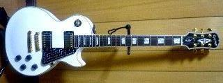

Epiphone Les Paul Custom 改造歴
2007年12月12日 カテゴリー：ギター関係

2005年4月頃に買ったエレキギターEpiphone Les Paul Customです。上の写真が購入当時です。ピックガードは穴をあけてそれをつないで、みたいな模様にしてます。
2005年5月の写真です。ピックアップのカバーを外しています。カバー内までロウ漬けになっていて外すのに苦労しました。その過程でフロントピックアップが断線したみたいで、フロントはダミー状態になっています。セレクターの穴もそのままでみっともないです。スイッチはボリュームをバイパスするスイッチだったと思います。
2005年8月の写真です。のっぺらぼうギター（笑）。フロントの穴とかを強引に埋めてトップのみ再塗装してます。塗装をはがすのがすごく厄介でした。あんまり磨いてないので良く見ると穴がうっすらわかります。表面もテカテカではないです。素人の限界かもしれません（めんどくさがりなだけか）。ピックアップカバーをまたつけていますが、ちゃんと固定しないとハウリングの原因になります。スポンジを詰めるとかしないとダメですね。
2005年12月の写真です。リアがDuncan SH-4になっています。フロントにリア用をつけるという暴挙（？）もやってますが、別に問題はなかったです。ボリュームとトーンは復活させないままで1VOL（タップスイッチ付）・1TONEです。
2006年1月の写真です。ペグとブリッジ、テイルピースがゴトー製のものになってます。金かかってるなぁ。トグルスイッチも銀色で統一して、クールな感じです。ピックガード・ロッドカバーはアルミテープを貼ってるだけです。
現在の写真です。汚れ（というか色焼け？）がいい感じです。やっぱフロントは使わないってことでまたダミーに。セレクターのところにあるのはボルトです。トーンもとっぱらってタップスイッチをつけてます。セレクターにいく配線がなくなってスッキリしました。音はそんなに変わった気はしないんですが…。写真では見えてませんが、弦を裏通しにしてます。サスティンが上がりました。テイルピースもなくしたかったんですが技術力不足です。
ピックアップはハムバッカーサイズのP-90タイプにしようかと企んでます。あと塗装ももう一度やり直したいです。ヘッドもギブソンヘッドにしてみたりとか…計画だけはあるんですけど、お金と時間の問題です。